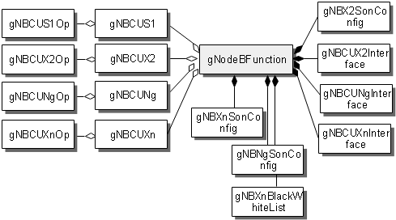

This section describes the functions and concepts of gNodeB
interfaces, including NG, Xn, S1, X2 interfaces. It also provides
the managed object model (MOM) view and describes the managed objects
(MOs) related to these interfaces.
Functions and Concepts
S1 Interface
An S1 interface is generally the interface between an eNodeB
and the EPC. In an LTE-NR NSA DC scenario, a gNodeB can directly connect
to the EPC through an S1 user-plane interface (A gNodeB cannot connect
to the EPC through an S1 control-plane interface).
- An S1 user-plane interface (known as S1-U) is used for data transmission
between the gNodeB and S-GW. When the gNodeB CU and gNodeB DU are
deployed in integrated mode or deployed separately, the gNodeB CU
provides the S1-U interface.
X2 Interface
An X2 interface connects a gNodeB
with an eNodeB. It can be an X2 control-plane interface or X2 user-plane
interface.
- The X2 control-plane interface transmits signaling messages between
a gNodeB and an eNodeB. It is known as X2-C interface.
- The X2 user-plane interface (known as X2-U interface) transmits
user data between a gNodeB and an eNodeB. When the gNodeB CU and gNodeB
DU are deployed separately, both the gNodeB CU and gNodeB DU can provide
the X2-U interface.
NG Interface
An NG interface is the interface
between the gNodeB and the AMF. It can be an NG control-plane interface
or NG user-plane interface.
- The NG control-plane interface is used between the gNodeB and
the AMF to transmit the NG signaling. It is known as NG-C interface.
- The NG user-plane interface is used between the gNodeB and the
UPF to transmit data between the gNodeB and UPF. It is known as NG-U
interface.
Xn Interface
An Xn interface is the interface
between gNodeBs. It can be an Xn control-plane interface or Xn user-plane
interface.
- The Xn control-plane interface transmits signaling messages between
a gNodeBs. It is known as Xn-C interface.
- The Xn user-plane interface is used to forward user data between
gNodeBs. It is known as Xn-C interface.
MOM Introduction
Figure 1 shows the gNBCU MOM, which is a subset of the gNodeBFunction MOM.
It also illustrates the MOs related to the interfaces of a gNodeB
CU.
Figure 1 gNBCU MOM

The
MOs related to the interfaces of a gNodeB CU are defined as follows:
- gNBCUS1: A gNBCUS1 MO defines
the transmission resources referenced by the S1 user plane of a gNodeB
CU (including the transmission resources used for the user-plane communication
between the gNodeB and an S-GW), including the user-plane endpoint
group used by the S1-U interface. A gNBCUS1 MO must be configured
in LTE-NR NSA DC Option3X (traffic split to the eNodeB through the
gNodeB) scenarios.
- gNBCUX2: A gNBCUX2 MO defines
the transmission resources referenced by the X2 interface of a gNodeB
CU (including the transmission resources used for the communication
between the gNodeB and a neighboring eNodeB), including the control-plane
endpoint group used by the X2-C and the user-plane endpoint group
used by the X2-U.
- gNBCUNg: A gNBCUNg MO defines
transmission resources of an NG interface between the gNodeB and 5GC.
It includes the used-defined information related to gNodeB CU NG such
as control-plane and user-plane endpoint groups.
- gNBCUXn: A gNBCUXn MO defines
transmission resources of an Xn interface between gNodeBs. It includes
the used-defined information related to gNodeB CU Xn such as control-plane
and user-plane endpoint groups.
- gNBNgSonConfig: A
gNBNgSonConfig MO is used to configure gNodeB-level parameters for
self-configuration of the NG interface.
- gNBXnSonConfig: A
gNBXnSonConfig MO defines parameters related to gNodeB Xn self-configuration.
- gNBX2SonConfig: A
gNBX2SonConfig MO defines X2 self-configuration information, including
the X2 self-configuration switch, X2 self-setup security mode, X2
setup failure wait time, and X2 automatic removal timer. X2 self-configuration
is used for automatic setup and release of X2 links on demand.
- gNBCUX2Interface: A gNBCUX2Interface MO defines the communication interface between
a gNodeB and a neighboring eNodeB, including the CP bearer information
used by the X2-C and the ID of the neighboring eNodeB.
- gNBCUNgInterface: A gNBCUNgInterface MO consists of user-configured parameters related
to an NG interface between a gNodeB and an AMF. The parameters specify
information about the NG interface and the AMF, including the control
port bearer used for the NG interface, the global unique AMF ID, and
PLMN ID of the AMF.
- gNBCUXnInterface: An gNBCUXnInterface MO defines the Xn interface as the communication
interface between the gNodeB and the gNodeB. The Xn interface includes
the information about the Xn interface configured by the user (such
as the CP bearer used by the Xn interface) and the identifier of the
peer base station of the Xn interface.
- gNBCUS1Op: A gNBCUS1Op
MO defines the operator information of the S1 object, and the referenced
S1 object configured with the user-plane endpoint group.
- gNBCUNgOp: A gNBCUNgOp MO is used to indicate the operator information of an NG object.
- gNBCUX2Op: A gNBCUX2Op MO is used to indicate the operator information of an X2 object.
- gNBCUXnOp: A gNBCUXnOp MO is used to indicate the operator information of an Xn object.
- gNBXnBlackWhiteList: A gNBCUS1Op MO defines the Xn blacklist and whitelist. If the peer
gNodeB is in the Xn blacklist, the Xn interface between the two gNodeBs
cannot be automatically set up. If the peer gNodeB is in the Xn whitelist,
the Xn interface between the two gNodeBs cannot be automatically removed.
Copyright © Huawei Technologies Co., Ltd.